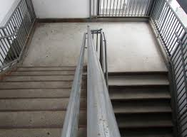

As you leave the "safety" of the roof you head down the stairs in hope that either the undead have left the
building or some of the people who helped you.
Are still alive and have "Killed" the remaining of the undead while you slept. Instead of rushing down the steps
you decide it would be best to move slowly and cautiously trying to be as quiet as possible.
Your instincts are telling you to return back to the roof however you still want to press on or you could try
your luck through the door on the next floor?
